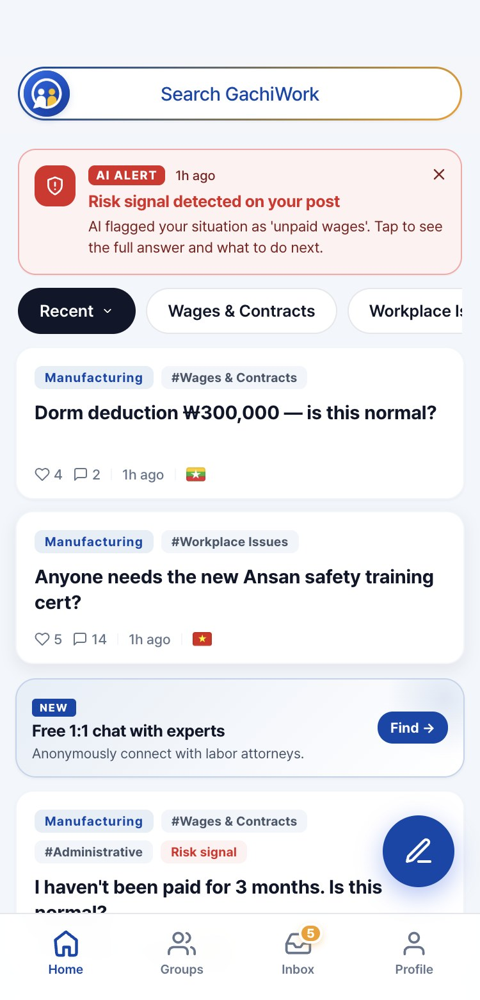

GachiWork
Define
340,000 migrant workers on E‑9 visas in factories and farms, tied to assigned workplaces and scattered across the country
Dorm fees come out of their pay, with no coworker to ask what others pay
Hard to tell whether what they face is common practice or illegal
Solution
Questions asked in one's native language, translated and sent to peers from other countries doing the same work
Peer answers and law-based official answers on one screen
When risks like unpaid wages are suspected, an alert to the user and a direct link to an expert inside the app
Process
Team of 4 from Korea, France and Indonesia
Survey of 86 newly arrived E‑9 workers at the Korea Labor Foundation's Yeoju training center. 85% knew no peers outside their workplace
Existing social media communities split by country, not industry, leaving workers from smaller countries out of the information flow. So we grouped people by industry, not country
4 rounds of user testing. For serious issues users wanted official information first, so answers were reordered to official info → peer experience
Result
Grand Prize (Teacher's Pick), Yonsei TAP Capstone
Selected for the Yonsei IHEI workstation
App prototype covering one flow, from question to expert connection
1 invention disclosure, pilot with real workers in development
Role
As team lead, led the work from service planning to UX/UI design and prototype development
Research design, scheduling, partnership prep with the Korea Labor Foundation
Video, presentation deck, poster
Tool
Claude Code, Adobe Illustrator
